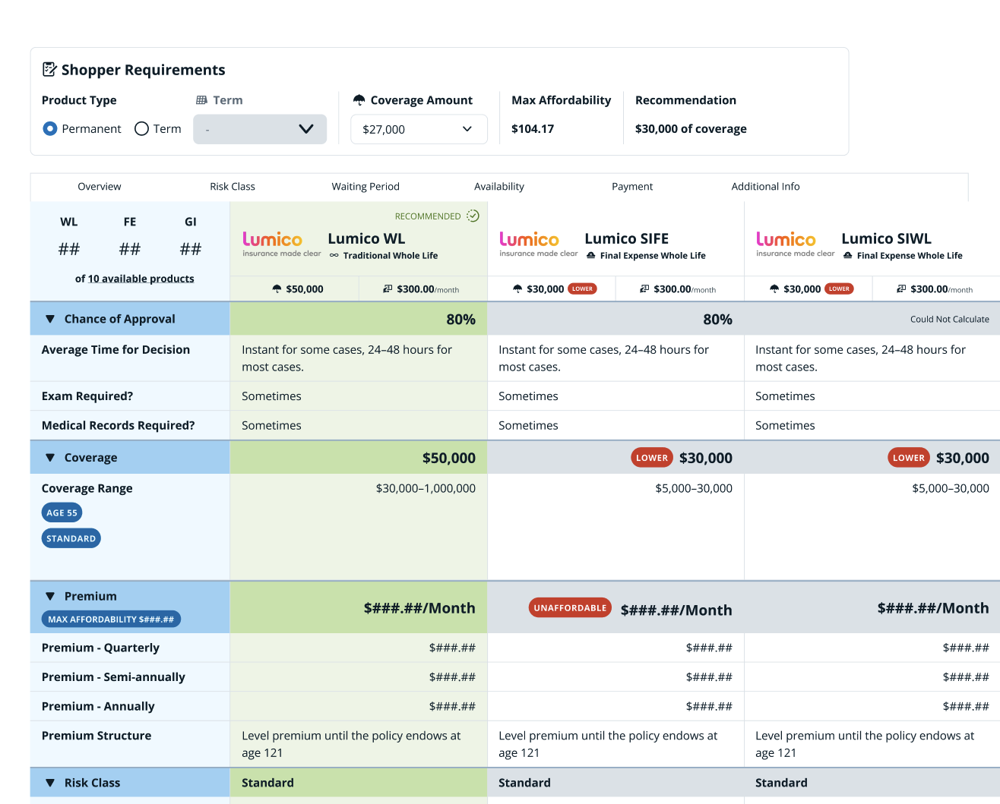
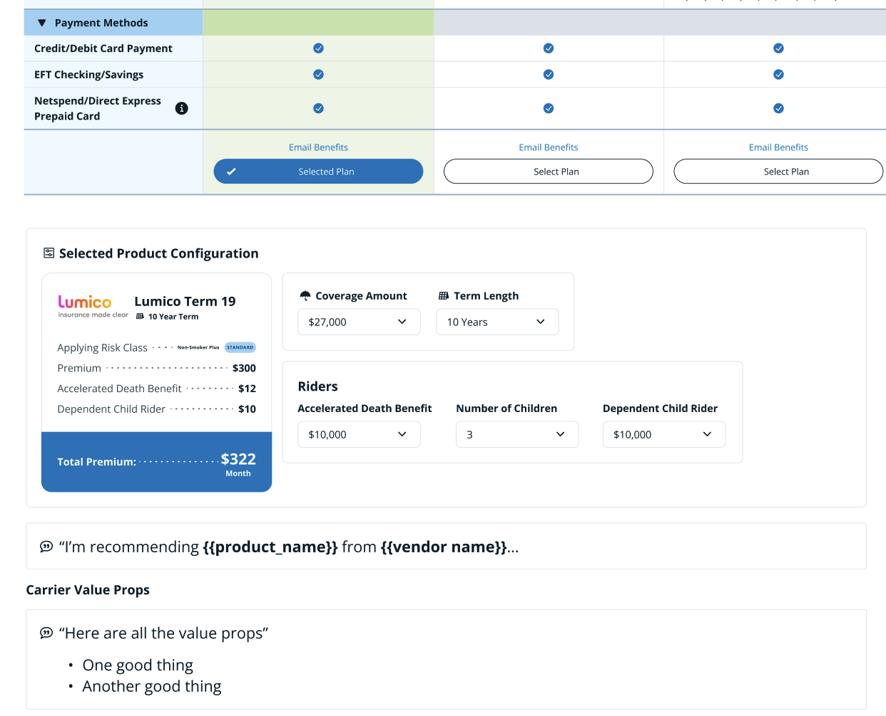
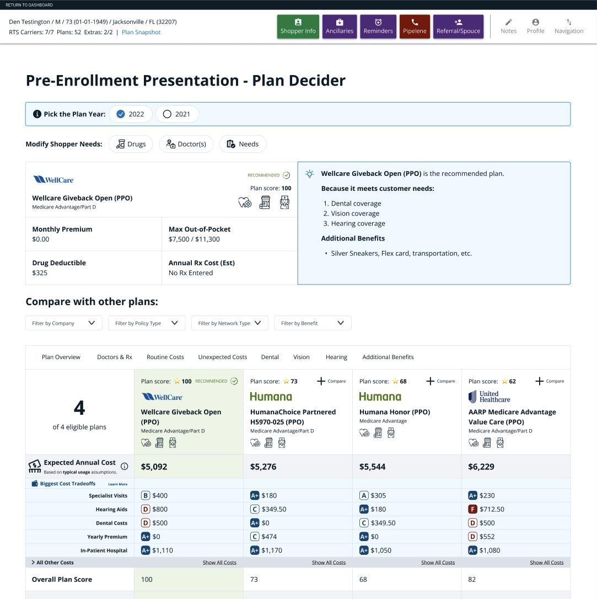
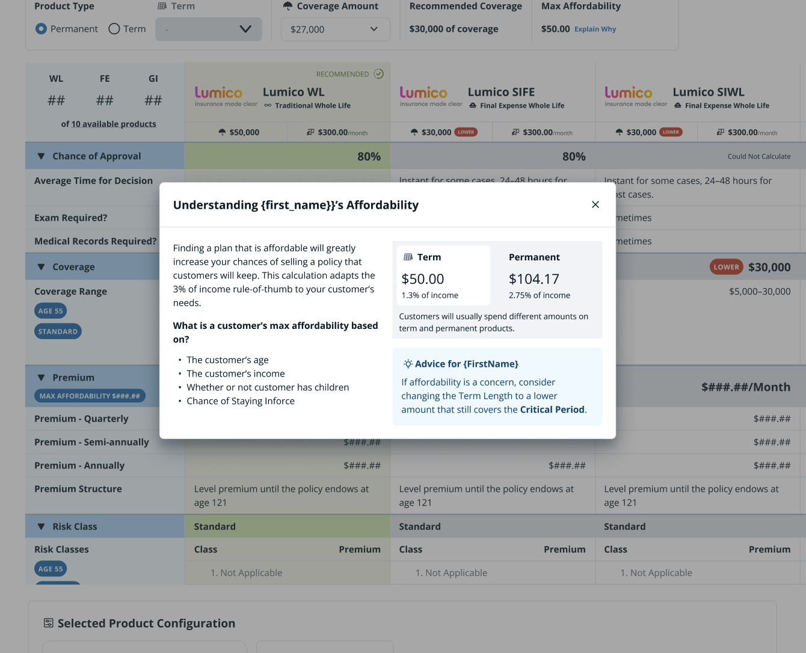

Assurance IQ has an industry-leading recommendation engine for insurance products, yet the quoting tools available to agents failed to support it. The main problems were that Agents could only view one product at a time and could not clearly identify the recommended plan. It was clear that a more dynamic tool was needed to help agents compare more plan configurations and understand the recommendation. To solve this, we did intense discovery with our agents to align the quoting tool to their mental quoting model and added table-stakes features like being able to compare multiple plans side-by-side.
Unified tool for quoting insurance products of any type, from Health, to Medicare, and Life Insurance.
In order to enable plan comparisons, we created a side-by-side view of plans that allow agents to see all possible plans simultaneously. For a typical user this might be overwhelming but for our Agents, who are experts with the products and software, this approach made sure they had all the specific details right at their fingertips rather than having to dig.

We split the Plan Decider into two separate steps; plan comparison, and plan configuration. We compared this to buying a car, when you first pick your car in the showroom and then configure the details later. In our interface, after a plan is selected by an Agent a new Product Configuration panel appears, allowing them to select riders and adjust other aspects of their Life insurance product. Splitting these interactions into two steps simplified the comparison interface and enabled the configuration step to be unique to each product.


For product recommendations to be valuable to users, it's essential that they understand why the recommendation fits their customer. We added informational features to teach Agents how the calculations are made and how they relate to their customer. Codifying this information lifted the curtains on our black box of data science based recommendations and helped internal team members and trainers also better understand how the calculation worked.

The Plan Decider was rolled out to a single sales team as an experimental feature and data from that team was compared against all other agents. The experiment was a clear success, with agents using Plan Decider seeing a handle time reduction of 3 minutes, on average, and an increased win rate of 1.5%. The feature was then rolled out to all agents and continued to receive very positive feedback from agents.